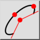
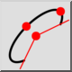
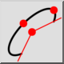
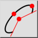

Arco elíptico
Barra de herramienta / icono:
 

Menú: Dibujar > Elipse > Arco elíptico
Acceso directo: E, A
Comandos: ellipsearc | ea
Esta es una traducción automática.
Barra de herramienta / icono:
 

Menú: Dibujar > Elipse > Arco elíptico
Acceso directo: E, A
Comandos: ellipsearc | ea
Dibuja arcos de elipse con un centro dado, ejes mayor y menor y ángulos de inicio y final.